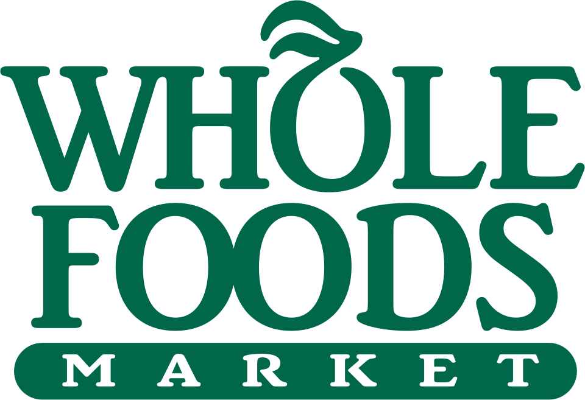

홀 푸드 마켓 Whole Foods Market
홀 푸드 마켓(Whole Foods Market)은 인공 첨가제가 포함되지 않은 유기농 식품을 전문적으로 판매하는 미국의 슈퍼마켓 체인이다. 아마존닷컴이 모기업이다.
최종 업데이트

홀 푸드 마켓은 어떤 브랜드인가
홀 푸드 마켓은 인공 첨가제가 포함되지 않은 유기농 식품을 전문으로 판매하는 미국의 슈퍼마켓 체인이다. 본사는 오스틴에 있으며 1980년에 설립되었고 창업자는 존 맥키이다.
북아메리카와 영국에 479개의 점포가 있다. 2017년 8월 23일 연방거래위원회가 아마존닷컴과의 합병을 승인했고, 이 거래는 2017년 8월 28일 종료될 것이라고 발표되었다.
현재 모기업은 아마존닷컴이다. 식료품부, 생산부, 해산물부 등 부서 전반에 GMO 투명성에 대한 노력을 적용하고 있다.
홀 푸드 마켓의 브랜드 아이덴티티는 무엇인가
인공 첨가제가 포함되지 않은 유기농 식품에 집중하는 슈퍼마켓 체인으로, GMO 투명성에 대한 노력을 부서 전반에 적용한다는 점이 특징이다.
홀 푸드 마켓의 대표 제품과 서비스는 무엇인가
홀 푸드 마켓의 중심 상품은 인공 첨가제가 포함되지 않은 유기농 식품이다. 매장은 식료품부(Grocery), 생산부(Produce), 해산물부(Seafood) 등의 부서로 나뉜다.
수년 간 비GMO 프로젝트로 확인된 물건들이 식료품부에서 판매되어 왔다. 생산부에서는 이러한 노력이 지속되면서 유기농 식품의 구매를 권고하고 있다.
해산물부에서는 양식 어류에 대해 비GMO 프로젝트 확인 프로세스의 계획이 진행되고 있으며, 현재 양식 어류에 대한 USDA 유기농 규제는 없는 상황이다.
홀 푸드 마켓은 지금 어떤 상태인가
현재 북아메리카와 영국에 479개의 점포가 있다. 모기업은 아마존닷컴이며, 2017년 8월 23일 연방거래위원회가 합병을 승인했고 그 다음 날 거래가 2017년 8월 28일 종료될 것이라고 발표되었다.
또한 GMO 제품 레이블을 2018년 고객에게 제공할 계획이라고 발표했다.
홀 푸드 마켓 로고는 어떻게 변해왔나
자주 묻는 질문
홀 푸드 마켓는 어느 나라 브랜드인가요?
홀 푸드 마켓는 미국의 리테일·커머스 브랜드입니다.
홀 푸드 마켓는 언제 설립되었나요?
홀 푸드 마켓는 1980년 설립되었습니다.
홀 푸드 마켓의 브랜드 아이덴티티는 무엇인가요?
인공 첨가제가 포함되지 않은 유기농 식품에 집중하는 슈퍼마켓 체인으로, GMO 투명성에 대한 노력을 부서 전반에 적용한다는 점이 특징이다.
홀 푸드 마켓의 대표 제품은 무엇인가요?
홀 푸드 마켓의 중심 상품은 인공 첨가제가 포함되지 않은 유기농 식품이다.
홀 푸드 마켓는 현재 어떤 상태인가요?
현재 북아메리카와 영국에 479개의 점포가 있다.
홀 푸드 마켓의 창업자는 누구인가요?
홀 푸드 마켓의 창업자는 존 맥키입니다(위키데이터 기준).
홀 푸드 마켓의 본사는 어디에 있나요?
홀 푸드 마켓의 본사는 오스틴에 있습니다(위키데이터 기준).
출처와 검증
홀 푸드 마켓 관련 참고: 공식 웹사이트 · 위키데이터 Q1809448 · 한국어 위키백과 · 영어 위키백과. 브랜드명은 한글과 원어를 함께 표기하되 데이터에 없는 표기는 만들지 않습니다. 기원 국가·설립연도는 검수된 정의문에서 확인된 값을 우선하고, 없을 때만 공식 웹사이트 URL이 일치하는 위키데이터 개체의 값을 씁니다. 탄생일의 월·일은 위키데이터, 위키백과 정보상자, 본문 가운데 같은 연월로 확인되는 값만 싣고, 출처끼리 다르면 싣지 않습니다. 위키데이터 값은 2026-10-18 기준입니다.